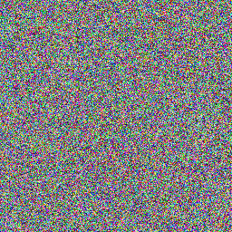

Lecture 11: Diffusion Models
Video blocked (ad-blocker or local file mode).
Watch on YouTubeVideo not loading? Watch on YouTube
Original lecture. Tengyu Ma derives diffusion models: forward noising, learned reverse, ELBO training.
How to read this lesson
This lesson has two levels. Level 1 (Core) contains what you need to understand everything that follows in CS229 and the courses that build on it. Level 2 (Deep) contains what you need for correct, interview-grade understanding. Read Level 1 straight through. Return to Level 2 when you want depth.
No prerequisites are assumed. Every term is defined at first use. The ELBO and the generative question were defined in lecture 10; they are reused, not re-explained.
Level 1: What diffusion models are
A diffusion model is a generative model for images, and now video and robot actions. Given many natural images, it learns to generate new clean images from the same distribution 00:05 ⏱00:05. Not copies of training images. New images that look like they came from the same source.
The field history matters. Image generation used GANs, then variational autoencoders (VAEs). Diffusion is now the predominant approach, better than both 01:40 ⏱01:40. The course no longer teaches GANs or VAEs; the notes keep VAEs only for the curious. When a course drops two established topics for one, pay attention.
Two applications beyond images. VLA models, vision-language-action, use diffusion to generate robot actions 00:39 ⏱00:39. And diffusion can generate in parallel in some sense, making inference potentially faster than autoregressive generation 02:33 ⏱02:33.

Sampling from a complex distribution given only samples. You have many real images and want new ones from the same distribution. The model learns a denoising process: start from pure noise, remove noise step by step, land on a realistic image. Training needs only the real images and the fixed noising process, no labels. Training stability. GANs pit two networks against each other in a game that is notoriously unstable. Diffusion trains a single denoising network on a straightforward regression-like objective. Stable training plus excellent sample quality won the field. The lecture states the outcome without relitigating the war.
Level 1: The forward process
The forward process q destroys images gradually 27:58 ⏱27:58. Start from a clean image x_0. Each step shrinks it slightly and adds a little Gaussian noise:
x_t = (1 - beta_t) x_{t-1} + sqrt(beta_t) eps_t
Beta is small, between 0 and 1, like 1e-4 07:40 ⏱07:40. Eps_t is fresh standard Gaussian noise each step. One step barely blurs the image. After T steps, around 1000 in the original paper 35:20 ⏱35:20, the image is pure noise.
The coefficients are chosen to preserve variance 12:29 ⏱12:29. If the data starts with identity covariance, every x_t keeps identity covariance: the shrinkage and the added noise balance exactly. Normalize the data first and the scale never drifts. This is bookkeeping, but the kind that prevents training from exploding.
The forward process is fixed. No learning. It is just a recipe for turning images into noise, step by step.

Because denoising gradually is easier to learn than denoising all at once 33:51 ⏱33:51. One giant jump from pure noise to a clean image is a brutally hard function to learn. A thousand tiny denoising steps are each easy: remove a little noise, keep the structure. The lecture’s intuition: the gradual path gives the learner a curriculum of easy problems instead of one impossible one. A learned noiser is what VAEs do, and it complicates training: the noiser and denoiser must co-adapt. Diffusion is more brute force: fix a simple noising recipe, spend all learning capacity on the denoiser. Fewer moving parts, more stable training. The fixed process is a feature.
Level 1: The reverse process and training
The reverse process p_theta learns to denoise. Given the noisier x_t, predict the cleaner x_{t-1}. A neural network does this, one step at a time. Chain T steps: start from pure noise x_T, apply the denoiser repeatedly, and a clean image x_0 emerges.
Training needs a loss for the denoiser. The answer is the ELBO from lecture 10: the evidence lower bound over the whole chain 39:44 ⏱39:44. The latent variables are the intermediate noisy images. The bound decomposes per step, so training becomes: pick a random clean image, pick a random step t, noise it to x_t with the fixed forward process, and train the network to denoise it. Simple, stable, scalable.
Sampling reverses the recipe. Draw x_T from a standard Gaussian. For t from T down to 1, sample x_{t-1} from p_theta given x_t. Output x_0. Every sample is a fresh walk from noise to image.
How to remove the noise added at one step: given x_t, produce a cleaner x_{t-1}. Equivalently, and commonly implemented, it predicts the noise eps_t that was added, and the cleaner image follows by subtraction. Both views describe the same learned denoiser. The network sees the noisy image and the step index t, because the right amount of denoising depends on how noisy the input is. As the training objective. The chain x_0..x_T is a latent-variable model: the noisy intermediates are hidden. The ELBO over the chain gives a per-step denoising loss. EM’s pattern, bound the hard thing and climb the bound, is literally the training algorithm. Lecture 10 was the rehearsal.
Level 2: Why T is large
T around 1000 looks wasteful. Each step is cheap, but a thousand steps per sample is a thousand network evaluations. The lecture’s answer is that small steps make each denoising problem easy, and easy problems train reliably. Fewer, bigger steps make each step harder and training less stable.
The field has since developed shortcuts: fewer-step samplers that skip along the chain, and distillation that compresses many steps into few. The training still uses the long chain. The sampling need not. This split, train long and sample short, is characteristic of deployed diffusion systems.
Level 2: Diffusion versus autoregression
Lecture 14 covers autoregressive generation: predict token by token, each depending on all previous. Diffusion differs in two ways. The generation order is not fixed: every step refines the whole image at once, which is the parallelism the lecture mentions. And the model sees the full noisy canvas each step, not just a prefix.
The tradeoff: autoregressive models handle discrete sequences naturally and need no fixed length. Diffusion handles continuous data naturally and refines globally. The frontier uses both: diffusion for images and actions, autoregression for text. Stefano Ermon’s work on diffusion language models tries to cross that boundary for faster text inference.
Recap: the whole lesson on one screen
Eight ideas carry this lecture. Read each card. Say the core sentence out loud. If you can, you own the lesson.
Learn the distribution of real images. Sample: pure noise in, clean image out. Predominant approach, better than GANs and VAEs.
Key: noise to image, learned
x_t = (1-beta_t) x_{t-1} + sqrt(beta_t) eps. Small beta, ~1000 steps. Variance preserving. No learning here.
Key: image to noise, fixed
The chain ends at a standard Gaussian. Sampling starts here. The forward process defines the starting distribution exactly.
Key: x_T is just noise
p_theta(x_{t-1} | x_t): a network removes one step of noise. Chain T applications. Gradual beats one-shot: easy problems, not one hard one.
Key: denoise step by step
The chain is a latent-variable model. The bound gives a per-step denoising loss. Lecture 10's pattern, deployed.
Key: bound, then climb
Draw noise, denoise T times, keep x_0. Every run gives a fresh image. Shortcuts exist for fewer steps at sample time.
Key: T denoise evaluations
Diffusion generates robot actions in VLA models. Parallel refinement can beat autoregressive token-by-token inference.
Key: actions are images too
VAEs learn both directions and co-adaptation hurts. Diffusion fixes the noiser, learns only the denoiser. Fewer moving parts win.
Key: brute force, stable
Official sources and further reading
Official: - Lecture 11 video: image generation task 00:05 ⏱00:05, VLA 00:39 ⏱00:39, predominant approach 01:40 ⏱01:40, parallel generation 02:33 ⏱02:33, forward process 07:40 ⏱07:40, variance preservation 12:29 ⏱12:29, one-shot question 33:51 ⏱33:51, T ~ 1000 35:20 ⏱35:20, ELBO training 39:44 ⏱39:44. - CS229 Spring 2026 official course notes: diffusion chapter; the x_0/x_T figures above are from it.
Further reading: - Ho, Jain, and Abbeel (2020), “Denoising Diffusion Probabilistic Models”: the DDPM paper. - Sohl-Dickstein et al. (2015): the original diffusion formulation.
Caveats from these sources. The “better than GANs and VAEs” claim is about image quality and training stability circa 2026; GANs still win on single-step sampling speed. The parallelism claim is “in some sense”: practical speedups need few-step samplers. The notes’ VAE chapter is retained for interest, not examined.
Connections to the other courses
- CS336: diffusion language models are the alternative to autoregressive generation; the course compares the paradigms.
- CS224N: the ELBO training pattern matches variational objectives in text generation.
- CS329H: VLA models are diffusion policies: actions sampled like images.
Diffusion cheatsheet. Task: sample new images from the data distribution. Forward q: x_t = (1-beta_t)x_{t-1} + sqrt(beta_t) eps_t; fixed; variance preserving; T ~ 1000; ends at pure noise. Reverse p_theta: learned denoiser, one step at a time; gradual beats one-shot. Training: ELBO over the chain, per-step denoising loss. Sampling: noise, denoise T times. Wins: stable training, quality; VLA actions; parallel refinement.
Easy problems, chained. One impossible denoising jump becomes a thousand easy ones. When a task looks unlearnable, ask what gradual version of it is learnable. The curriculum is the algorithm.
Sources
- VIDEOLecture 11 video, Stanford Online YouTube
- NOTESOfficial subtitle transcript (en-US)
- NOTESCS229 Spring 2026 official course notes (local PDF)